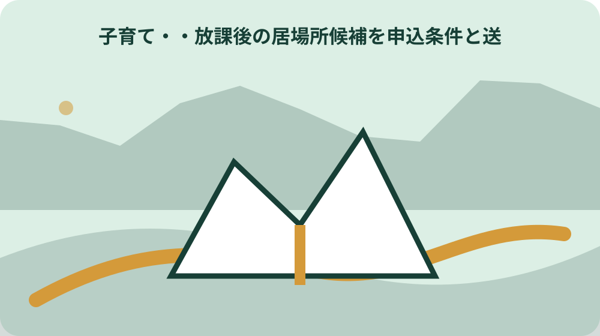
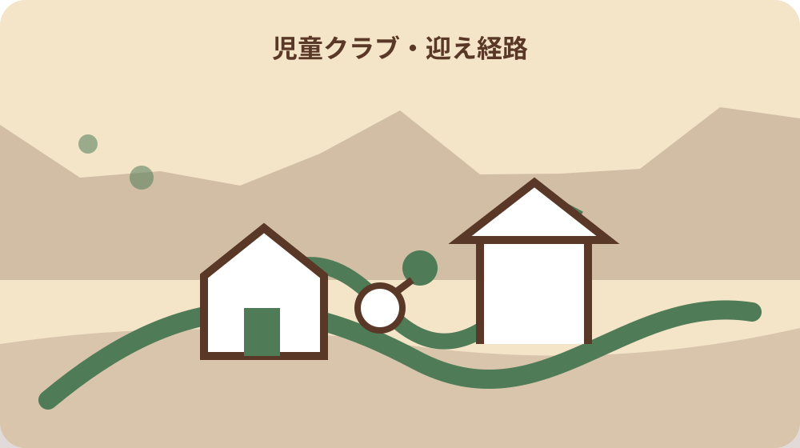

先に結論を確認する
この記事の答え：曜日ごとに下校、勤務終了、迎え到着の時刻を置き、利用区分、受入場所、基本終了時刻、追加申込み、料金を別列で比べます。年度と確認日を付け、決定通知後に送迎表を確定します。
森町で最初に照合する条件：年度、通年利用、長期休業期間だけの利用、土曜利用、延長利用を別欄にし、過年度の受付日や料金を次年度へ流用しない。
最初に決めるのはクラブ名ではなく必要な時間帯
放課後の居場所を考えるとき、先にクラブ名を選ぶと、必要な曜日や迎え時刻が後回しになりがちです。まず一週間の表を作り、子どもの下校時刻、保護者の退勤時刻、自宅へ戻れる時刻を曜日ごとに並べます。
森町の令和8年度案内では、学期中の基本利用は下校時から17時30分まで、延長利用を申し込んだ場合は18時までです。勤務先を出る時刻ではなく、実際に迎え場所へ到着できる時刻と照合します。
月曜だけ習い事がある、金曜は祖父母が迎えられるなど、毎日同じ条件とは限りません。必要な日数を少なく見せるためではなく、迎えが不確かな曜日を特定するために、例外を別の行へ書きます。
家族の勤務表が月ごとに変わる場合は、通常週と繁忙週を二枚に分けます。平均的な一週間だけで決めると、残業や学校行事が重なる日に誰も迎えられない空白が残ります。
このページで作る比較表の目的は、申込みの可否を自分で断定することではありません。家庭の必要時間を先に見える形にして、森町の最新案内と窓口確認へつなげることです。
下校が早い日や学校行事の日は、通常の時刻表だけでは不足します。年間予定が届いた段階で該当日へ印を付け、勤務先へ相談する日とクラブへ確認する日を分けて予定表へ置きます。
制度の対象と家庭の事情を同じ言葉にしない
こども家庭庁は放課後児童クラブを、保護者が労働などで昼間家庭にいない小学生へ、授業終了後等の遊びと生活の場を提供する事業と説明しています。単なる自習場所ではなく、生活時間を含む居場所です。
森町の案内は、就労のほか、妊娠・出産、病気やけが、親族の介護などで養育できない家庭も利用児童の基準として示しています。ただし、家庭で該当すると考えただけで利用決定になるわけではありません。
申込書には、養育が必要な理由を裏付ける書類を添えます。会社員や自営業、疾病、障がい、介護、看護、求職、就学、妊娠・出産では書類の種類が異なるため、家族全員を一語の『就労』へまとめません。
家庭内で子どもを見られない時間と、提出書類が証明する期間も分けます。例えば診断書に記載された療養期間と、家族が援助を必要と感じる期間が違う場合は、勝手に日付を延ばさず窓口へ相談します。
本人や家族の事情は変わります。申込み時点の理由を一年間固定した前提にせず、勤務、住所、氏名、利用区分、連絡先に変更が生じたら、町の変更届が必要かを確認します。
子どもの希望も別欄で聞きます。利用条件を子どもだけに選ばせるのではなく、過ごし方で不安なこと、友人関係、静かに休みたい時間などを聞き、説明会で確認する質問へ変えます。
森・飯田・宮園の実施場所を地図に置く
森町の令和8年度案内には、飯田小学校内の飯田放課後児童クラブ、宮園小学校内の宮園放課後児童クラブ、森小学校内と森町保健福祉センター内の森放課後児童クラブが掲載されています。
町の職員募集案内でも、森、飯田、宮園の三クラブが勤務場所として示されています。同案内は公設民営と説明しているため、申請窓口、運営事業者、実際の利用場所を一つの連絡先として扱わないようにします。
地図には自宅、学校、想定クラブ、保護者の勤務先、日常的に迎えを頼める人の出発地を置きます。直線距離だけでなく、夕方の道路、駐車や乗降の場所、徒歩区間を現地で確認します。
森クラブは公式案内に学校内と保健福祉センター内の記載があります。どちらを使うかを名称だけで決めず、利用決定後の通知や説明会で、対象期間の受入場所を確かめます。
住所を家族の共有表へ書くときは、公式通知に記載された場所を転記します。地図アプリの施設名が似ていても、玄関、迎え口、車の進入方向まで同じとは限りません。
迎え担当の交代に備え、場所の共有には撮影可能な範囲の目印と公式連絡先を使います。子どもの利用日時や氏名が分かる情報を、公開範囲の広い地図サービスへ登録しないようにします。

学期中・長期休業・土曜・延長を四列で比べる
利用時間は一つの欄にまとめず、学期中、長期休業、土曜、延長の四列にします。令和8年度の学期中は下校時から17時30分、延長利用者は18時までで、学校がある日と休みの日では開始時刻が違います。
長期休業期間と土曜は8時から17時30分までと案内されていますが、8時からの利用は保護者の就業開始時刻などにより必要と認められる場合に限られます。必要性の確認を省いて単に開所時刻として扱いません。
土曜は申込者だけが利用でき、町内全域を対象に森放課後児童クラブで実施する予定とされています。平日のクラブと同じ場所へ向かう前提を外し、土曜専用の送迎時間を測ります。
日曜、祝日、盆休み、年末年始は閉所日です。保護者の勤務先が営業する日と閉所日を年間予定表で重ね、親族、勤務調整、別の居場所を相談する日を早めに見つけます。
時間表には『利用できる最長時刻』と『家族が迎えに着ける時刻』を別々に書きます。18時まで開いていても、延長申込みが済んでいなければ基本時間の延長として利用できません。
通年利用と長期休業だけの利用を分ける
森町の申込みは、学校のある日と長期休業を含む通年利用と、春・夏・冬休みだけの利用に分かれます。家族の希望を『必要なときだけ』と曖昧にせず、どちらの区分に当たるかを日付で確認します。
長期休業期間は終業式の翌日から始業式の前日までで、小学校により異なる場合があります。町全体のカレンダーだけで決めず、在籍校が配布する日程と利用希望期間を重ねます。
長期休業期間だけの利用では、在学する小学校内ではなく、他校内のクラブや別施設で受け入れる可能性があります。夏休み初日に初めて知ることがないよう、決定通知で場所を確認します。
年度途中から利用したい家庭も、一斉募集の案内を確認するよう町は求めています。必要になる月が分かっているなら、その月に空きがあると想定せず、年度案内の申込方法と利用調整を早めに尋ねます。
通年から長期休業だけへ変更する場合は、変更届に加えて長期休業期間のみの利用申出書も必要と案内されています。口頭連絡だけで区分が切り替わったと思い込まないよう、提出書類名を記録します。
申込書と養育を必要とする証明を人別にそろえる
基本の申込書類は、申込書、調査票、同意書、養育を必要とする証明です。延長・土曜を希望する場合や長期休業だけを希望する場合には追加書類があるため、利用区分ごとのチェック欄を作ります。
町は父母と65歳未満の同居親族全員分の証明を求めています。同居には二世帯住宅、同一敷地の別棟、隣接地に住む場合も含むため、住民票上の世帯だけで対象者を決めません。
就労では就労証明書、自営業等では確定申告書や開業届などの添付、疾病や介護では申立書と診断書等が案内されています。家族ごとに理由、必要様式、添付、取得日を四列で管理します。
就労証明書は申請日の3か月以内に証明を受けたものとされています。早く準備しすぎた書類が期限外にならないよう、勤務先へ依頼する日と提出予定日を逆算します。
原本や写しに個人情報が含まれるため、家族の共有チャットへ無条件に添付しません。提出済みかを共有する一覧と、書類そのものの保管場所を分け、必要な人だけが閲覧できるようにします。
利用料は月額だけでなく追加費用と月差を見る
令和8年度の通年基本利用料は、8月を除く通常月が5500円、8月が8250円です。毎月同じ額として家計表へ入れず、夏休みのある8月を別行にします。
土曜利用と17時30分から18時までの延長利用は、それぞれ基本利用に月額1000円を加える案内です。利用日数だけで日割りを想定せず、申込区分ごとの月額を公式表で確認します。
長期休業期間だけの利用も、4月、7月、8月、12月、1月、3月で料金が示されています。利用しない月を含む通年利用との比較では、一年分の合計だけでなく必要書類や受入場所も並べます。
おやつ代や教材費等は別途かかります。基本利用料だけを比較表の総額にせず、説明会で案内された費用、支払方法、引落日を受け取った資料どおりに追記します。
料金は年度により変わり得ます。令和8年度の金額を翌年度の確定額として残さないよう、表の上部に対象年度と確認日を書き、次年度案内が出たら旧表を上書きせず新版を作ります。
利用調整と受入場所の変更を予定表へ残す
申込書を出した時点では利用決定ではありません。町は受付書類をもとに利用者の選考を行い、申込者多数の場合は待つことがあり、空きが生じた後に順次決定すると案内しています。
通年利用の通知時期は2月頃、長期休業だけの場合は希望期間の開始月の前月下旬頃までと示されています。通知前に勤務先へ確定した預け先として伝えず、回答待ちの期間を予定表へ置きます。
場合によっては面接があり、利用決定後には3月上旬の説明会が案内されています。面接や説明会へ誰が参加し、聞いた内容を家族へどう共有するかも担当を決めます。
長期休業だけの利用で受入場所が変わる場合、子どもにとっても移動先や支援員が変わる可能性があります。住所だけでなく、初日の集合、持ち物、欠席連絡先を説明会資料から確認します。
待機中の代替案は、一つの家庭へ無理を集中させない形で複数持ちます。勤務調整、親族、地域の別サービスなど、利用条件を確認できた選択肢だけを候補欄へ残します。
結果を受け取った日は、利用可否だけでなく開始日、利用区分、場所、追加手続き、説明会の日時を転記します。家族の口頭伝言だけにせず、通知原本の保管者と次に確認する担当者も必ず決めます。
迎えの経路を平日と学校休業日で試す
送迎時間は地図アプリの予測だけで決めず、実際に迎える曜日と時間帯に一度走ります。勤務先の退勤処理、駐車場までの移動、夕方の道路状況、迎え口から子どもを引き取る時間まで含めます。
平日は学校内、長期休業や土曜は別の場所になる可能性があります。経路表を一枚に重ねるのではなく、平日、長期休業、土曜の三枚にし、迎え担当が迷わない入口写真や交差点を残します。
家族以外が迎える可能性があるなら、誰を引渡者として届ける必要があるかを説明会で確認します。家族が了承しただけで受渡しできると決めず、クラブ側の登録方法に従います。
災害や道路規制で通常経路が使えない場合もあります。第二経路は早道ではなく、安全に停車でき、子どもと連絡が取れない場合にも迎え先へ到達できる道として選びます。
子ども本人にも、利用場所が変わる日を予定表で伝えます。大人の送迎表だけを完成させず、どの建物で誰を待つか、困ったとき誰に伝えるかを年齢に合う言葉で確認します。

取下げ・中止・利用区分変更の日付を管理する
利用決定通知を受け取る前に不要となった場合は申込みの取下願、利用期間中にやめる場合は利用中止届と、町は書類を分けています。『キャンセル』という一語で窓口へ伝えず、現在の段階を確認します。
利用中止は希望月の前月20日までで、土日祝日の場合は直前の平日が期限です。日付を遡って中止できないため、勤務変更や転居が決まった日から提出期限を計算します。
住所、氏名、利用区分、連絡先などが変わった場合には変更届が案内されています。家族の連絡先だけ直して終えず、申込書に記載した項目のどこが変わったかを一覧にします。
利用区分の変更も原則として前月20日までです。通年から長期休業だけへ変えるときは追加の申出書があるため、変更届一枚で完了したと判断せず受理された書類名を残します。
提出した日、提出方法、受け付けた窓口、変更が適用される月を一行にまとめます。控えがない場合でも、後から確認できるよう公式様式名と確認日を記録します。
大石の視点：預け先選びを家族の罪悪感にしない
森・飯田・宮園の場所、利用区分、時間、書類、料金、変更期限は森町の資料から確認できます。ここからは私、大石博之が送迎表を住まい選びへつなぐ際の考えであり、町の公式見解ではありません。
私見では、放課後児童クラブを使うかどうかを、親が子どもと過ごす気持ちの強さで評価すべきではありません。必要な曜日と時間を具体化し、子どもが安全に過ごせる場所を確保する生活設計の一つです。
一方で、利用決定だけをゴールにすると、迎えが毎日ぎりぎりになる、長期休業の場所が違う、子どもが疲れているといった暮らしの変化を見落とします。決定後も家族の時間表を更新します。
住まいを選ぶ場面では、小学校までの距離だけでなく、クラブの利用場所、保護者の勤務先、頼れる人の経路を一緒に見ます。ただし将来の受入場所を不動産広告の確定条件として表示することはできません。
私なら、候補住宅ごとに迎え時刻を試走し、残業時の代替担当と閉所日の対応まで書いてから家族で比べます。家賃や価格だけでは見えない毎週の移動負担を、契約前に言葉と時間へ置き換えるためです。
年度更新できる一枚の比較表にまとめる
最後に、子どもの氏名と学年、在籍校、利用年度、希望区分、希望曜日、基本終了時刻、延長、土曜、長期休業、想定場所を一枚へまとめます。氏名以外の項目も確認日を付けます。
二段目には、父母と65歳未満の同居親族ごとに、養育できない理由、必要書類、発行依頼日、受取日、提出日を置きます。書類の中身を写すのではなく準備状況を共有します。
三段目は費用です。通常月、8月、土曜、延長、長期休業月、おやつ・教材等の別途費用を分けます。公式金額と家族が見積もった交通費を同じ列にせず、出所を明記します。
四段目には、利用決定通知、説明会、初回利用日、変更届、中止届の期限を並べます。通知前は『未決定』と書き、空欄を利用可能の意味にしません。
表の末尾へ森町公式ページのURL、年度、確認日、問い合わせ先を残します。次年度は古い行を削除せず複製して更新し、料金や時間、場所の差が家族にも分かるようにします。
この比較表が完成しても、申込みや利用決定の代わりにはなりません。最新年度の案内を読み、必要書類と受入場所を窓口で確認し、決定通知を受けて初めて送迎表を確定します。子どもと迎え担当にも確定後の内容を伝えます。